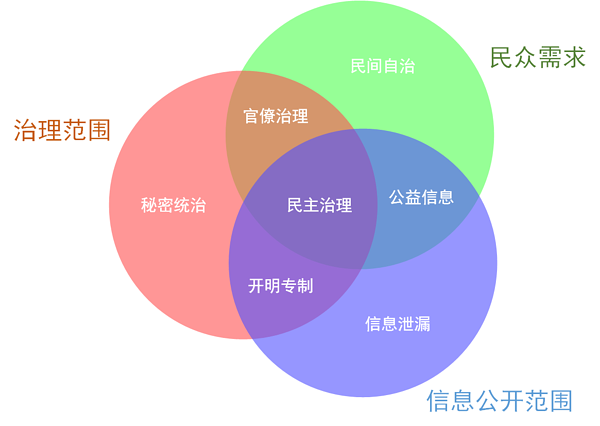

治理与信息公开
#治理 , #政府 , #统治 , #民主 , #专制 , #开明专制 , #谣言 , #信息 , #传播 , #反抗 , #自治 , #官僚主义 , #信任 , #信用 , #个人主义 , #权利
最近武汉新型冠状病毒肺炎的事情，因为信息隔绝，网络上争论不少，传言四起。
不少被官方辟谣的传闻是真的，而一些官方的声明和辟谣，反而被事实证明不成立。
而有的人仍然认为任何一点细节错误，都应该称为虚假的谣言，而且为了治理稳定的目的，民众没有权利发布和传播谣言，因为民众远离现场、不够专业、盲目轻信、易被煽动，只有官方的信息专业、准确、可靠、可控。
在胡泳的一篇旧文《谣言作为一种社会抗议》中提到，涩谷保和卡普费雷等学者认为，谣言不一定等于虚假的信息，是在官方渠道的新闻无法满足民众需求时，民众自发追求真实信息的产物。
在此意义上，谣言的真假只是一个短暂社会事件的细节，它也许绝大部分都是虚假、夸大的，只有制造、煽动恐慌、仇恨和暴力的作用，也许也有揭露真相的时候，在观察社会的人看来，并不重要；重要的是，谣言的存在和传播，说明社会存在官方渠道之外自发追寻、制造、传播信息的土壤。
这就好像大规模暴力革命反抗是否道德正义是一个问题，社会是否存在滋生暴力动乱代替非暴力手段解决问题的条件，是另一个问题。
高压手段可以压制一次又一次的“反抗”，但未必能彻底解决“反抗”的社会需求，甚至反而会激发出更加强烈的需求。
基于此，尝试用粗浅的维恩图延伸解释一下。
此图中用到的政治学或社会学术语不甚精确，也不带有道德批判色彩，仅用于基本的分析。

图中红色的部分，表示政府的治理范围。
绿色部分，表示民众的实际需求。
在不涉及信息公开的需求和职责时，政府治理和民众需求重叠的部分，相当于传统的政府官僚治理领域，无关治理采取的具体意识形态和手段。
这一块治理的效果好，实际上就是满足了民众的需求，反之则是背离人民需求的糟糕治理，可能导致各种抵制和反抗。
不过，满足需求反过来不等于就万事大吉，如果采用低效、高成本、不可持续的手段，如频繁、长期的社会总动员，又或者是财政无法平衡的高福利，最终仍可能治理失败。
在实际生活中，政府治理不可能面面俱到，无孔不入，在其治理权力覆盖的范围之外，是民间自治的领域。
民间自治有政府治理无法取代的创造力和活力，但自发秩序仍有可能发展到无底线、低效率、反文明、自我毁灭的博弈死循环中。
另一端，在超出民众必需的服务范围之外，政府天然有统治民众而非服务的倾向，如具备如下特征：
集体优先于个人权利，强调统治者特权地位，政权的目的是优先维持和扩张自身。
再考虑增加蓝色的部分，即信息公开的范围，作为新的维度，还可以将上述的分析推进一层。
三种颜色区域重叠的交集部分，是广义上的现代民主治理的范畴。
在此区域内，理论上，政府存在和运作的目的是服务于民众的需求，信息的公开也应经过民众授权和接受监督。
这既不表示现代民主治理下，就没有治理失败的案例，也不代表可以消除谣言的需求，更不代表其治理能力就超出其他区域，而得出结论说此一交集应该无限制扩大，只是它通常能够更加有效地避免和应对其他区域中遇到的一些问题，如信息不透明带来的猜疑和反抗尝试，相对更低的统治维持成本。
在民间自治的部分，因为超出了政府治理的范围，此时信息公开的可视作民间互助的与治理无关的公益信息。
如果公布的信息超出民众需求，又脱离政府治理，此时就进入信息泄露的范畴，成为侵犯个人权利或危害社会安全的信息安全事件。
最后再来看看治理范围内的情况。
传统的官僚治理在官方信息不透明时，一旦无法建立和维持民众对政府的信任，就有向民间自治寻求突破的需求倾向，这也就是谣言产生的原动力——即使实际上前者的效果可能大多数时候还优于后者，但这种客观的效果不能替代心理感受上的衡量。
德鲁克就介绍过一个案例，工人们宁愿继续参加自己挑选保险公司、商定协议的低效又昂贵的人寿保险，也不愿意选择公司请保险专家帮他们设计和选择的各方面都更好且公司会支付大部分保费的保险计划，是一样的道理。
超出民众需求的统治，如果又没有信息公开的动作，（为了不带道德色彩）可称之为秘密统治，如耳熟能详的特务政治，紧急状态下的军事管制，以及从官僚治理演变而来的官僚统治——官僚机构不断膨胀，权力不断扩张，效率不断下降，消耗社会财富以供养的压力越来越大，而民众却无从理解官僚机构的运作逻辑，只能被动跟随和承受，更遑论建立信任。
这种状态正是滋生谣言的最佳环境，而且越是压制谣言，无论是强调官方信息的唯一正确，还是用各种手段消灭、删除谣言，意图展示什么事情都没有发生，都不能解决信任缺失的问题，也不能满足民众的心理需求，反而会适得其反，制造更强烈的需求。
而如果统治者对决策和掌控能力有绝对信心，同时能够做到开诚布公，虽然一方面社会反抗会带来更高的统治成本，但另一方面也能够逐步建立民众对统治者的信任和依赖，形成持久的开明专制制度。
一般而言，从秘密统治很难回归官僚治理，而仍存在流向开明专制和民主治理的可能路径。
以上的分析十分粗浅，因为实际运作中还有许多重要因素要考虑，比如：
真正的民众需求如何评估？在民主制度的信息公开范围之外，知识分子和官僚有可能扭曲民众需求的真实反映；
重复博弈形成自发秩序和建立/摧毁公权力信用都涉及时间的因素；
决策者和成本负担者的错位，加上时间因素，可能导致债务财政问题。